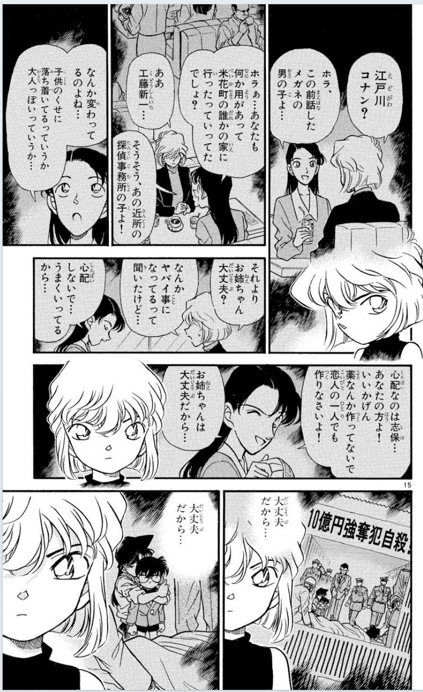
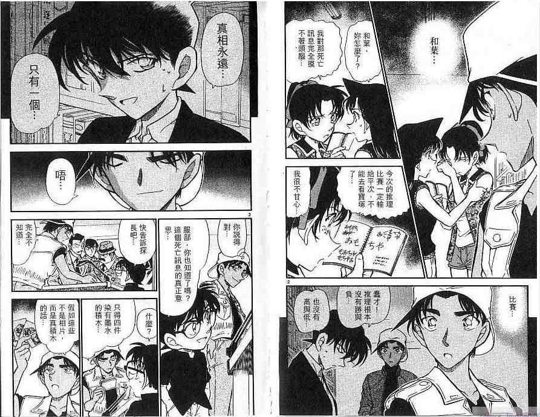

起因是前段时间我看到这样一个视频
【【名柯分析】横跨30年的叙诡：黑与白的陷阱-哔哩哔哩】 网页链接
（注意这里“黑框”指漫画格子外涂黑，格子内部背景涂黑不算）
这位up认为黑框回忆为真实，白框回忆为虚幻，这与我的印象并不相符。于是我翻了一下1-1125话，收集了所有黑框的背景，整理了一下，试图探究黑框究竟代表了什么
白框回忆太多所以并没有整理，但是在探讨时会涉及一些白框回忆的个别例子
统计表：腾讯表格后缀为DQ0txR0FhV1Rpd2dK（因之前直接发完整链接会被吞，所以这里只发后缀）
接下来会先放探究结论，然后所有整理会分楼层放出
【【名柯分析】横跨30年的叙诡：黑与白的陷阱-哔哩哔哩】 网页链接
（注意这里“黑框”指漫画格子外涂黑，格子内部背景涂黑不算）
这位up认为黑框回忆为真实，白框回忆为虚幻，这与我的印象并不相符。于是我翻了一下1-1125话，收集了所有黑框的背景，整理了一下，试图探究黑框究竟代表了什么
白框回忆太多所以并没有整理，但是在探讨时会涉及一些白框回忆的个别例子
统计表：腾讯表格后缀为DQ0txR0FhV1Rpd2dK（因之前直接发完整链接会被吞，所以这里只发后缀）
接下来会先放探究结论，然后所有整理会分楼层放出
统计的时候发现一个灰框，因为不知道这个算是什么，就单独拿出来了
是Vol.28 File.6人鱼岛开头的剧情，这一页与前后剧情连贯，没看出来有什么特殊的地方。后续对于黑框的讨论不会涉及这个例子
是Vol.28 File.6人鱼岛开头的剧情，这一页与前后剧情连贯，没看出来有什么特殊的地方。后续对于黑框的讨论不会涉及这个例子
cy
一共统计到129个黑框，其中有：
1个是听说的事情
1个是传说
1个是柯南推理秀时脑补的案发过程
1个是录像
4个是上帝视角（？），因为黑框前后的人都不知道黑框内容
3个是犯人的假证词
羽田案情况特殊单独讨论
其余多数为亲历者的回忆
1个是听说的事情
1个是传说
1个是柯南推理秀时脑补的案发过程
1个是录像
4个是上帝视角（？），因为黑框前后的人都不知道黑框内容
3个是犯人的假证词
羽田案情况特殊单独讨论
其余多数为亲历者的回忆
1个听说的事情
上野出发的北斗星3号，有希子提起编辑在银行遇到抢劫，回忆者不是亲历者
上野出发的北斗星3号，有希子提起编辑在银行遇到抢劫，回忆者不是亲历者
1个传说：
鸟取蜘蛛屋之怪，蜘蛛大人的传说
鸟取蜘蛛屋之怪，蜘蛛大人的传说
1个柯南推理秀时脑补的案发过程雪山山庄杀人事件，柯南叙述中原香织破坏现场的过程
1个是录像
六月新娘杀人事件
六月新娘杀人事件
4个上帝视角（？）
因为前后出现的人物都不是回忆者，所以被我划为上帝视角
平藏和银司郎讨论案子，在浪花连续杀人事件的开头，后面接的是平次带事务所三人组观光 抢劫团伙枪杀叶才三，也是整个事件的开头，后接事务所三人组猜谜语 几年前秀吉立下七冠王的目标，前为少侦得知秀吉为将棋名人，后为由美在警视厅 次郎吉在警视厅偶遇高明，前为事务所三人看报纸，后为展览当天。回忆内容的后半只有次郎吉、高明和路人警察知道。这里虽然次郎吉出现在展览当天，而且知道黑框内容，但是没有说话，黑框后第一个说话的是中森银三，所以我没有把它划为次郎吉的回忆，而是视为上帝视角
这些上帝视角的回忆前两个是在一整个事件的开头，第四个是在靠近整个事件开头的位置，第三个是在靠近结尾的位置，而且第一二四个都是两整页。我觉得靠近开头和占两整页可以视为上帝视角的黑框回忆的一种常见特征。
次郎吉在警视厅偶遇高明，前为事务所三人看报纸，后为展览当天。回忆内容的后半只有次郎吉、高明和路人警察知道。这里虽然次郎吉出现在展览当天，而且知道黑框内容，但是没有说话，黑框后第一个说话的是中森银三，所以我没有把它划为次郎吉的回忆，而是视为上帝视角
这些上帝视角的回忆前两个是在一整个事件的开头，第四个是在靠近整个事件开头的位置，第三个是在靠近结尾的位置，而且第一二四个都是两整页。我觉得靠近开头和占两整页可以视为上帝视角的黑框回忆的一种常见特征。
因为前后出现的人物都不是回忆者，所以被我划为上帝视角
平藏和银司郎讨论案子，在浪花连续杀人事件的开头，后面接的是平次带事务所三人组观光 抢劫团伙枪杀叶才三，也是整个事件的开头，后接事务所三人组猜谜语 几年前秀吉立下七冠王的目标，前为少侦得知秀吉为将棋名人，后为由美在警视厅
回忆者：
129个中，5个无回忆者（1录像+4上帝视角）
其余124个的回忆者统计见表
6个是多回忆者（其中羽田案占4个）
29个是犯人的回忆（动机和案发过程为主）
15个是柯南的回忆
其他人不到两位数
129个中，5个无回忆者（1录像+4上帝视角）
其余124个的回忆者统计见表
6个是多回忆者（其中羽田案占4个）
29个是犯人的回忆（动机和案发过程为主）
15个是柯南的回忆
其他人不到两位数
常见类型：大致看了一下，21个动机，7个案发过程
可能不准，因为经常有这样的情况：犯人听某人说了什么事情，起了杀心（这段是有回忆画面的），然后脑子一热就把对方干掉了（这段只有叙述，没有画面）。这应该是包含了动机，但很难说这到底算不算回忆案发过程，因为案发过程没画出来，但对话框是在黑框背景中的
可能不准，因为经常有这样的情况：犯人听某人说了什么事情，起了杀心（这段是有回忆画面的），然后脑子一热就把对方干掉了（这段只有叙述，没有画面）。这应该是包含了动机，但很难说这到底算不算回忆案发过程，因为案发过程没画出来，但对话框是在黑框背景中的
关于长度：
大多数不超过一页
比较长的（超过5页的）有：
佐藤回忆松田从转入一课到殉职，10页+
秀一回忆与水无摊牌，13页+
福井柚嬉回忆小五郎破案，5页+
玛丽回忆被贝尔摩德喂药，7页
羽田案（5+7+14+12页）
伊织回忆与红叶的相遇，9页+
一般来说，黑框回忆属于插叙。如果一整个案子都是以回忆为主的，会使用白框，然而羽田案是个例外。正是因为羽田案是黑框，所以我没办法下“如果整个事件以回忆为主，那么会使用白框回忆”的陈述。整个事件以回忆为主的有：飞天密室、纽约篇、平新滑雪场、少年冒险、水族馆、樱花班、涟漪篇，其中大多数是只有案件开头和结尾是现实，平新滑雪场中途切回来了一次（柯南想起当年的事，但认为赢的不是自己），少年冒险中途切回来三次（笑小新一念错汉字，分析暗号，柯南想明白当年的推理错误找到正确答案） 羽田案不知道怎么概括。感想就是：要是这是上帝视角就方便多了，干嘛费劲涂黑啊
除了1107话结尾是黑田视角的回忆，但是后面一话开头是现在的朗姆之外，其他回忆视角与现实之间的切换都是连得上的，是可以说有比较明确的回忆者的
中间浩司留暗号的情节（标为绿色字体的），有浩司的内心台词，这个不是任何活人能回忆出来的，要么归为某个回忆者的脑补，要么就是上帝视角（总不至于是浩司还活着这种鬼故事吧 ）
）
另外关于羽田案为什么这么“黑”（划掉）为什么不用白框直接上帝视角，我还是不太明白。羽田案跟少年冒险一样，都是现实讲故事切换到过去，然后再切回来，写点现实的人的反应再接着讲故事，一共切回现实三次，为什么少年冒险是白框，羽田案是黑框呢？是因为羽田案有多个回忆者，少年冒险只有一个回忆者吗？还是说要强调三个人的视角呢？一整段十几页的回忆中，视角切得那么频繁，这跟上帝视角有什么区别呢，而且开天眼读浩司内心台词就更像上帝视角了……
大多数不超过一页
比较长的（超过5页的）有：
佐藤回忆松田从转入一课到殉职，10页+
秀一回忆与水无摊牌，13页+
福井柚嬉回忆小五郎破案，5页+
玛丽回忆被贝尔摩德喂药，7页
羽田案（5+7+14+12页）
伊织回忆与红叶的相遇，9页+
一般来说，黑框回忆属于插叙。如果一整个案子都是以回忆为主的，会使用白框，然而羽田案是个例外。正是因为羽田案是黑框，所以我没办法下“如果整个事件以回忆为主，那么会使用白框回忆”的陈述。整个事件以回忆为主的有：飞天密室、纽约篇、平新滑雪场、少年冒险、水族馆、樱花班、涟漪篇，其中大多数是只有案件开头和结尾是现实，平新滑雪场中途切回来了一次（柯南想起当年的事，但认为赢的不是自己），少年冒险中途切回来三次（笑小新一念错汉字，分析暗号，柯南想明白当年的推理错误找到正确答案） 羽田案不知道怎么概括。感想就是：要是这是上帝视角就方便多了，干嘛费劲涂黑啊
除了1107话结尾是黑田视角的回忆，但是后面一话开头是现在的朗姆之外，其他回忆视角与现实之间的切换都是连得上的，是可以说有比较明确的回忆者的
中间浩司留暗号的情节（标为绿色字体的），有浩司的内心台词，这个不是任何活人能回忆出来的，要么归为某个回忆者的脑补，要么就是上帝视角（总不至于是浩司还活着这种鬼故事吧
）另外关于羽田案为什么这么“黑”（划掉）为什么不用白框直接上帝视角，我还是不太明白。羽田案跟少年冒险一样，都是现实讲故事切换到过去，然后再切回来，写点现实的人的反应再接着讲故事，一共切回现实三次，为什么少年冒险是白框，羽田案是黑框呢？是因为羽田案有多个回忆者，少年冒险只有一个回忆者吗？还是说要强调三个人的视角呢？一整段十几页的回忆中，视角切得那么频繁，这跟上帝视角有什么区别呢，而且开天眼读浩司内心台词就更像上帝视角了……
还有一件事情，可以肯定黑白框是青山指定画的吗，会不会是编辑等其他职位负责的？
2024-01-22 19:24 | 平者深黑:我觉得，在没有证据表明这不是青山设计的情况下，可以先认为是青山设计的。像这种指定一下的事情也不费事。虽然贴网点是助手做的，但是他说过“安室和平次都是51号网点”，说明使用什么网点还是青山定的。由此推测，像这种黑白框的指定应该是青山做出的吧
本次整理发现的一个有意思的点就是，黑框回忆中用回忆者出框表现激烈的情绪波动的现象：
图书馆柯南回忆少侦一起上电梯超载，柯南头像跨两格 佐藤回忆父亲忘带手铐后车祸死亡，回忆者跨五格，被喊没反应 朱蒂回忆小时候遇到贝尔摩德和大火，一整页，回忆者跨三格
茶会安室回忆艾莲娜，一整页，回忆者跨三格
涟漪篇前柯南回忆赤井母子三人，回忆者出框，跨四格
朱蒂回忆小时候遇到贝尔摩德和大火，一整页，回忆者跨三格
茶会安室回忆艾莲娜，一整页，回忆者跨三格
涟漪篇前柯南回忆赤井母子三人，回忆者出框，跨四格
 采野菜若狭回忆浩司的话，回忆者出框，跨三格，触发一过性黑曚
采野菜若狭回忆浩司的话，回忆者出框，跨三格，触发一过性黑曚
 高木回忆伊达死亡，大跨页，回忆者出框，跨三格，被喊没反应
除柯南外，其他几个人都是因为回忆中重要的人死亡而情绪波动大
高木回忆伊达死亡，大跨页，回忆者出框，跨三格，被喊没反应
除柯南外，其他几个人都是因为回忆中重要的人死亡而情绪波动大
图书馆柯南回忆少侦一起上电梯超载，柯南头像跨两格 佐藤回忆父亲忘带手铐后车祸死亡，回忆者跨五格，被喊没反应
用人物出框表示激烈的情绪波动是黑框回忆的常用方法，但是并不表示情绪激烈一定会用黑框，或者一定会出框
一个典型反例就是哀回忆明美，符合回中重要的人死去，情绪波动大（虽然并没有表现在表情上，但是可以从逐渐拉近的特写，以及脑海中反复回荡的“大丈夫だから”，看出回忆者的情绪），但这个回忆并没有黑框，回忆者也没有跨几个格子
一个典型反例就是哀回忆明美，符合回中重要的人死去，情绪波动大（虽然并没有表现在表情上，但是可以从逐渐拉近的特写，以及脑海中反复回荡的“大丈夫だから”，看出回忆者的情绪），但这个回忆并没有黑框，回忆者也没有跨几个格子

2024-02-24 23:46 | cm0fs0:这里的黑框，会不会用黑背景所代替呢？
关于回忆的真实性：
开头提到过，3个是犯人的假证词
管家虚构谷晶被绑架的过程 回不去的两人，犯人回忆与女友吵架。他说吵架后女友就离家出走了，但后来证实是犯人带女友来的案发现场。女友的信里写“我已经变了”，也与犯人回忆中女友说自己没变相矛盾 一丁点都不原谅，犯人编造夫妻吵架结果误伤妻子的事
开头提到过，3个是犯人的假证词
管家虚构谷晶被绑架的过程 回不去的两人，犯人回忆与女友吵架。他说吵架后女友就离家出走了，但后来证实是犯人带女友来的案发现场。女友的信里写“我已经变了”，也与犯人回忆中女友说自己没变相矛盾 一丁点都不原谅，犯人编造夫妻吵架结果误伤妻子的事
2024-02-27 10:20 | 逆光模糊了眼睛:小女孩被绑架的这个案子 此处黑底色回忆格子中凶手小黑是长发 这是柯南变小当天遇的第一个案子他还着急着找出琴酒 所以这里管家的回忆我觉得有点像是第三人（柯南）听了当事人（管家）的回忆描述 自己进行的脑补回忆描述 ——参杂了自己的想象脑补
dd
这个视频我也看过，目前只能说，漫画背景的涂黑，纯白肯定有特殊用意，有意为之。证据就是很多黑背景是不规则斜角，用up的话说就是精准的覆盖每一个漫画格子，既不多涂，也不漏掉。但是说白和涂黑是真与假，也有点不太贴切。看有没有大神能推理出更好的说法了。
有些是与真实情况略有差距的
月光案中，圭二杀死妻儿、锁门自焚的叙述为假，火中弹琴的画面夸张化 龟山勇的死亡，画面为真，“他在死前弹奏”的叙述为假，实为成实弹奏
月光案中，圭二杀死妻儿、锁门自焚的叙述为假，火中弹琴的画面夸张化 龟山勇的死亡，画面为真，“他在死前弹奏”的叙述为假，实为成实弹奏
有些回忆的场景是漫画曾经画出来的，可以进行具体的比较。不过也不好说是回忆误差还是作画误差
图书馆事件
元太数人数的那一格，柯南光彦步美的站位朝向与实际不同 谁的推理秀
谁的推理秀
回忆中平次帽子戴反了， 这个其实是设定吧，平次正戴帽子是认真状态，反戴是放松的日常状态。回忆中可能就因为案子已破，所以脑补自己已经把帽子转回去了
图书馆事件
元太数人数的那一格，柯南光彦步美的站位朝向与实际不同
回忆中平次帽子戴反了， 这个其实是设定吧，平次正戴帽子是认真状态，反戴是放松的日常状态。回忆中可能就因为案子已破，所以脑补自己已经把帽子转回去了
采野菜与四叶草
羽田案完整回忆中没有左上角这格：“即使这样你也要杀了我吗”
羽田案完整回忆中没有左上角这格：“即使这样你也要杀了我吗”
其他没有明确证据表明真实性问题的黑框回忆，默认为真
综上，黑框回忆不一定是真的，有虚构的假证词，有虚构的传说，存在叙述偏差和画面偏差的情况。所以首楼视频“黑框为真实”的陈述并不正确
至于白框为虚幻的说法，我可以说大多数回忆都是白框吗
柯南至今三百多个案子，大多数案子都会有动机、证词的回忆，它们大多数都是白框回忆，黑框回忆的动机只有二十几个，难道其它回忆的动机都是假的吗？
诸多回忆篇中，只有羽田案是黑框回忆，飞天密室、纽约篇、平新滑雪场、少年冒险、水族馆、樱花班、涟漪篇都是白框回忆，要是说白框都是虚幻那不如别看回忆篇了吧
甚至可以说白框回忆是偏向于客观的，上面列举的回忆篇中，都有回忆者不知道的内容：飞天密室新一的内心活动、纽约篇兰昏迷后的事情、平新滑雪场优作和有希子的对话、少年冒险最后盗一和有希子的对话、樱花班优作和犯人的对话、涟漪篇秀一的内心台词。这些都是更有可能是上帝视角才知道的，而不是出于回忆者的脑补
我认为白框比黑框更客观的另外一个理由：侦探梳理线索、分析疑点、列出一二三四、进行推理的时候，是几乎没有黑框的（除了图书馆柯南回忆少侦一起上电梯超载和雪山山庄案柯南叙述中原香织破坏现场的过程）。我们想想三百多个案件，不管是不是恶性案件，都会有推理。不管是谁推理的，都会有梳理、分析线索和推理的过程，其中99%以上都是白框
综上，黑框回忆不一定是真的，有虚构的假证词，有虚构的传说，存在叙述偏差和画面偏差的情况。所以首楼视频“黑框为真实”的陈述并不正确
至于白框为虚幻的说法，我可以说大多数回忆都是白框吗
柯南至今三百多个案子，大多数案子都会有动机、证词的回忆，它们大多数都是白框回忆，黑框回忆的动机只有二十几个，难道其它回忆的动机都是假的吗？
诸多回忆篇中，只有羽田案是黑框回忆，飞天密室、纽约篇、平新滑雪场、少年冒险、水族馆、樱花班、涟漪篇都是白框回忆，要是说白框都是虚幻那不如别看回忆篇了吧
甚至可以说白框回忆是偏向于客观的，上面列举的回忆篇中，都有回忆者不知道的内容：飞天密室新一的内心活动、纽约篇兰昏迷后的事情、平新滑雪场优作和有希子的对话、少年冒险最后盗一和有希子的对话、樱花班优作和犯人的对话、涟漪篇秀一的内心台词。这些都是更有可能是上帝视角才知道的，而不是出于回忆者的脑补
我认为白框比黑框更客观的另外一个理由：侦探梳理线索、分析疑点、列出一二三四、进行推理的时候，是几乎没有黑框的（除了图书馆柯南回忆少侦一起上电梯超载和雪山山庄案柯南叙述中原香织破坏现场的过程）。我们想想三百多个案件，不管是不是恶性案件，都会有推理。不管是谁推理的，都会有梳理、分析线索和推理的过程，其中99%以上都是白框
还有那个方形框也挺有意思的，有时候是旁白，有时候是心理
早上想了一下横向对比。
《魔术快斗》（1987-）《剑勇传说》（1988-1993）均有黑框表示回忆的部分。也有楼主提到的“人物出框”的画法。下图示例为《魔术快斗》第1卷与《剑勇传说》第24卷。 此外黑框也被用于其它目的，如梦境。下图为《剑勇传说》第1卷鬼丸猛的梦境。
此外，楼主提到青山指定网点纸一事让我猜测黑框是否也被用在其它漫画里作为一种技法。限于时间精力，只能随便翻几篇漫画，找也是跳着找的。以小学馆《周刊少年Sunday》为例，的确有很多漫画包含这种画法，如《我是大哥大》（1988-1997）、《四叶游戏》（2005-2010）、《葬送的芙莉莲》（2020-）。当然不止Sunday系的漫画有，如Jump系的《海贼王》《辉夜大小姐想让我告白～天才们的恋爱头脑战～》也有。也有漫画几乎不使用这种方法，如《犬夜叉》（Sunday，1996-2008），其中很多背景为黑色的格子直接将黑色超出框，即使不是回忆。
此外黑框也被用于其它目的，如梦境。下图为《剑勇传说》第1卷鬼丸猛的梦境。
此外，楼主提到青山指定网点纸一事让我猜测黑框是否也被用在其它漫画里作为一种技法。限于时间精力，只能随便翻几篇漫画，找也是跳着找的。以小学馆《周刊少年Sunday》为例，的确有很多漫画包含这种画法，如《我是大哥大》（1988-1997）、《四叶游戏》（2005-2010）、《葬送的芙莉莲》（2020-）。当然不止Sunday系的漫画有，如Jump系的《海贼王》《辉夜大小姐想让我告白～天才们的恋爱头脑战～》也有。也有漫画几乎不使用这种方法，如《犬夜叉》（Sunday，1996-2008），其中很多背景为黑色的格子直接将黑色超出框，即使不是回忆。
下三图为《我是大哥大》25卷（右上角部分涂黑）、《四叶游戏》第164话（现实与回忆叠加，但是全部涂黑）、《葬送的芙莉莲》第2话（涂黑部分可以稍微提前到现实部分）。 在我找到的示例中，大部分黑框为矩形。白与黑的交错处除了用一条横线分开以外，还有渐变溶解、疏密黑线等形式。最后，以上例证仍然不足以确定青山刚昌是否参与黑框设计。
《魔术快斗》（1987-）《剑勇传说》（1988-1993）均有黑框表示回忆的部分。也有楼主提到的“人物出框”的画法。下图示例为《魔术快斗》第1卷与《剑勇传说》第24卷。
下三图为《我是大哥大》25卷（右上角部分涂黑）、《四叶游戏》第164话（现实与回忆叠加，但是全部涂黑）、《葬送的芙莉莲》第2话（涂黑部分可以稍微提前到现实部分）。 在我找到的示例中，大部分黑框为矩形。白与黑的交错处除了用一条横线分开以外，还有渐变溶解、疏密黑线等形式。最后，以上例证仍然不足以确定青山刚昌是否参与黑框设计。
cy 辛苦了
2024-01-23 00:13 | 平者深黑:其实分析已经发完了。所有黑框的截图还在想要不要发，纯图是有些无聊的，而且一百多个回忆有点多2024-01-23 00:20 | 柯哀♬:回复 平者深黑 :其实感觉现在这样发统计表格就挺好的～ 全发有点太多了
太严谨了
黑框本质是为了帮读者区分回忆和现实，无需再专门标注一段回忆的起始和终结格，起到辅助阅读作用。
大段乃至整话的回忆前后有专门说明，自然不需要用黑框作为提示。
而羽田案特殊在于多人多线回忆，回忆内容和现实故事频繁切换，就也需要黑框来辅助提示读者回忆和现实的分割位置。
大段乃至整话的回忆前后有专门说明，自然不需要用黑框作为提示。
而羽田案特殊在于多人多线回忆，回忆内容和现实故事频繁切换，就也需要黑框来辅助提示读者回忆和现实的分割位置。
深黑老师辛苦了
辛苦了
这个黑框似乎真的没有什么特别的含义，只是作为在跨页的时候区分回忆与现实的一种手段，下面几个黑框均涉及到跨页的问题
443平次回忆新一的话
443平次回忆新一的话

469犯人回忆死者的话
474羽贺响辅回忆死者的话
508犯人回忆和死者吵架的话
519导演回忆四年前死者死前情况
整理时还注意到回忆中角色说话是灰色气泡的问题，我一开始还想着灰色气泡为真，白色气泡为假，但是出现了一个例外
472小五郎想象中的画面气泡也是灰色...
472小五郎想象中的画面气泡也是灰色...